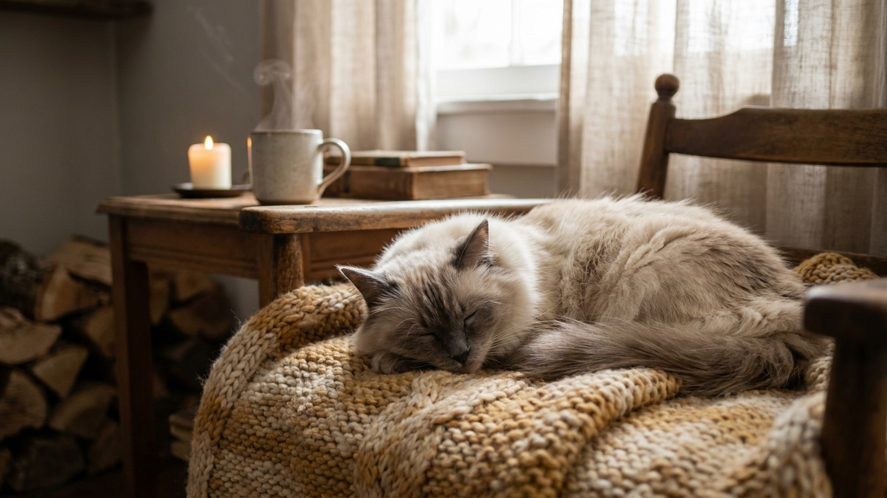

Балинез выглядит как сиамец, которому поставили шикарный хвост-плюмаж и прибавили громкости. Это не случайно: порода — прямой потомок сиамской, отличается только длиной шерсти. Но шерсть эта без подшёрстка — и уход за ней куда проще, чем кажется с первого взгляда. Зато к характеру нужно быть готовым: балинез буквально считает себя членом семьи с правом голоса — и пользуется этим правом постоянно.
🐾 Всё о вашем питомце — в одном приложении
AI-ветеринар, дневник, напоминания о прививках и уходе. Установите AnimaLife — это бесплатно, в Telegram и MAX.
Балинезийская кошка — одна из самых «говорящих» пород. Она комментирует всё: ваш приход домой, наполнение миски, закрытую дверь в ванную, разговор по телефону. Голос у балинеза не тихий, и молчать, когда что-то не так, порода не умеет.
У балинезийской кошки одинарная шерсть — без подшёрстка. Это принципиально отличает её от персов, мейн-кунов и норвежских лесных. Шерсть не сваливается в колтуны так легко, не образует «подушки» под брюхом, линяет умеренно.
Балинез — интеллектуально активная порода. Ей нужны не только физические игры, но и задачи: интерактивные игрушки, головоломки с едой, обучение командам. Да, балинезийские кошки поддаются обучению лучше среднего — некоторые приносят брошенные предметы, реагируют на имя и выполняют простые команды.
Без достаточной стимуляции кошка становится навязчивой и тревожной. Оптимально — два-три коротких активных сеанса игры в день плюс что-нибудь, что она может изучать самостоятельно: туннели, когтеточки-башни, окно с видом на улицу.
Порода в целом крепкая, но как и любой сиамский тип, балинез чувствителен к стрессу. Смена обстановки, новые животные или шум — всё это может повлиять на аппетит и самочувствие. Если кошка резко изменила поведение, перестала есть или стала прятаться — повод показаться ветеринару.
🐾 Спросите AI-ветеринара прямо сейчас
AnimaLife — приложение, где AI-ветеринар отвечает на вопросы о кошке или собаке 24/7. Бесплатно, без записи и очередей.
🐾 Понравился разбор?
Подпишитесь на канал — каждый день разбираем по одному тревожному симптому у кошек и собак: что в пределах нормы, а когда пора к врачу. Подпишитесь, чтобы не пропустить разбор, который может спасти здоровье вашего питомца.
Материал носит информационный характер и не заменяет очную консультацию ветеринара.